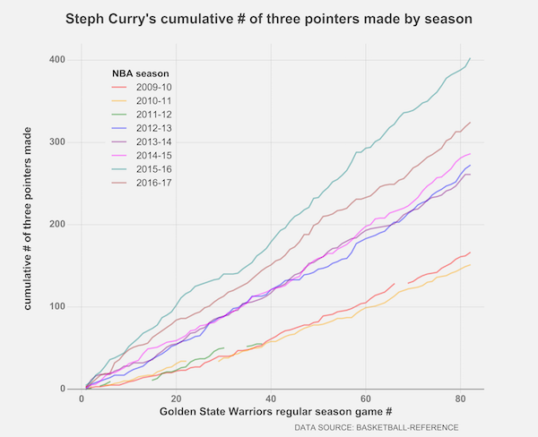

daidaviz
data viz and exploration
Viz: Steph Curry three pointers made

Notes: 2011-12 was a shortened season due to the lockout and Curry was riddled with injuries, playing in only 26 out of the 66 games. 2015-16 was Curry's best making 402 three pointers (NBA record for most 3 pointers made). Second and third on the all-time most 3 pointers made in a season list are also held by Curry (324 in 2016-17 and 286 in 2014-15).
Viz: Personal running in 2017
Notes: I ran the most in the first 4 months of the year as I was training for my first marathon in May. I gradually increased my total KM every month until the big race and cut down my KM quite a bit to recover. Eventually, I lost my motivation to run as I did not sign up for any running events for the rest of the year.
Viz: Shark attacks
Notes: Shark incidents peak in July in U.S. while peaks occur in December/January in Australia and South Africa. This makes sense since these peaks correspond to the summer months for each country.
Viz: U.S. college textbook prices
Notes: I went to university in Canada between 2011 and 2016.
Viz: APPL vs. BBRY stock prices

Notes: BBRY closing price actually peaked in May of 2008, roughly a year after the first iPhone was released (it was released in June of 2007).